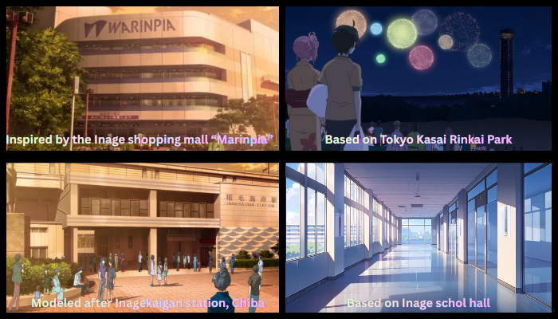
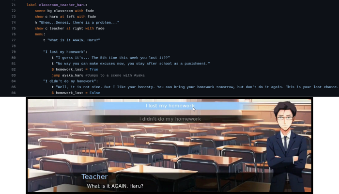

This interactive visual novel applies evidence-based psycholinguistic principles to enhance English communication skills among Japanese high school students. By embedding language learning within familiar school environments and peer interactions, the game creates optimal conditions for natural language acquisition while reducing anxiety and increasing engagement.
Project Details
Timeline: 2022–2023 Academic Year Location: Sogo High School, Chiba, Japan Target Audience: High School Students (Ages 15-18) Platform: Ren'Py (Python-based)
Gameplay Example
The Science Behind the Design
The project is grounded in four established psycholinguistic theories that directly inform its
structure and learning experience.
1. Willingness to Communicate (WTC)
Learners speak more when they feel socially comfortable and contextually secure.
Application:
Students interact with same-age peers in familiar school settings, increasing confidence
and voluntary English use.
2. Schema Theory
Familiar contexts reduce cognitive load and support comprehension.
Application:
Real school locations and everyday situations allow students to focus on language,
not interpreting unfamiliar scenarios.
3. Input Hypothesis (i+1)
Language acquisition occurs when input is slightly above the learner’s current level.
Application:
Dialogue blends known structures with new expressions supported by context and repetition.
4. Affective Filter
Anxiety and fear inhibit language acquisition.
Application:
Private, choice-based gameplay lowers stress and encourages experimentation without
social risk.
Environment Setting

Game Features
🎮 8+ Different Endings - Multiple story paths based on player choices
👥 Diverse Characters - Japanese classmates and international students
🏫 Real School Locations - Authentic photos from students' actual high school
💬 Natural Dialogue - Age-appropriate conversations reflecting real teen interactions
🔄 Replayability - Explore different choices to practice language in varied contexts

Development Process
Student Input: Surveyed students about their interests and comfort with different social scenarios
Environmental Design: Photographed school locations students interact with daily
Dialogue Writing: Created conversations using vocabulary from their curriculum plus contextualized new phrases
Coding Instruction: Taught students basic Python/Ren'Py to understand game mechanics
Playtesting: Iteratively refined based on student feedback and engagement patterns
Learning Outcomes & Results
📚 Vocabulary Growth: Students acquired contextual vocabulary through repeated exposure in meaningful scenarios
📖 Reading Comprehension: Familiar contexts enabled focus on language processing rather than situation interpretation
💬 Communication Confidence: Low-pressure game environment increased willingness to engage with English content
🎯 Practical Application: Dialogue reflected real peer interactions, preparing students for authentic communication
💻 Technical Skills: Students learned basic Python programming and game development concepts
🔄 Sustained Engagement: Multiple story paths encouraged repeated play and language pattern reinforcement
⚠️ Educational Use Notice
All images and sound effects are royalty-free or created specifically for this educational project. Student participation was voluntary with appropriate institutional consent. When using or citing this work in educational contexts, please acknowledge the theoretical frameworks and pedagogical approaches described above.